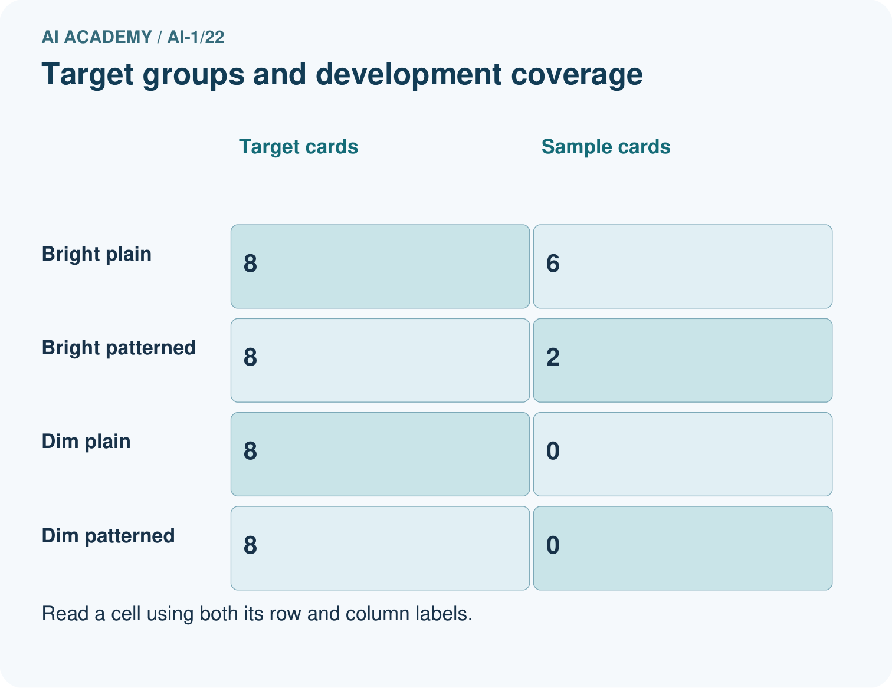
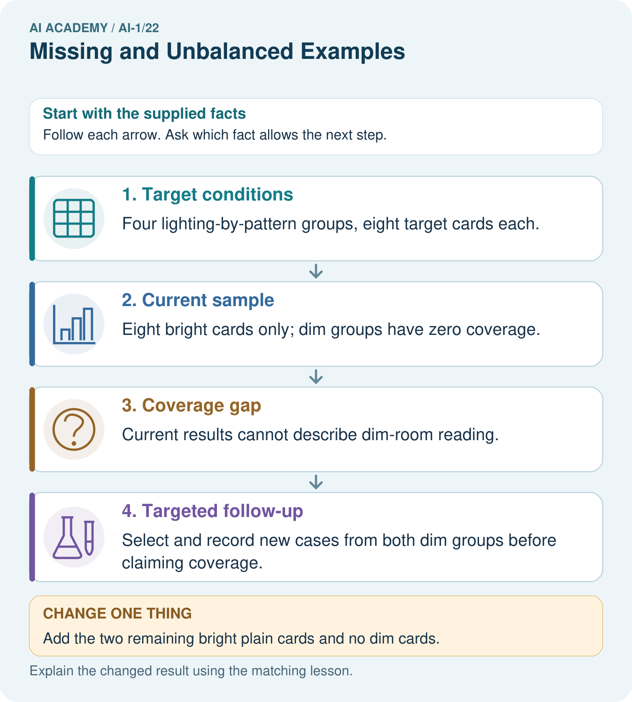
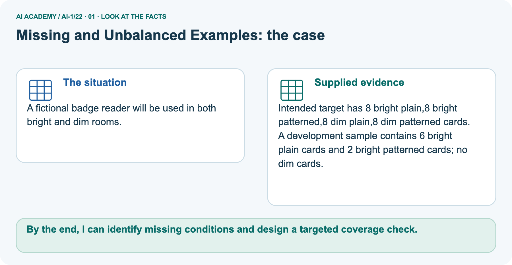
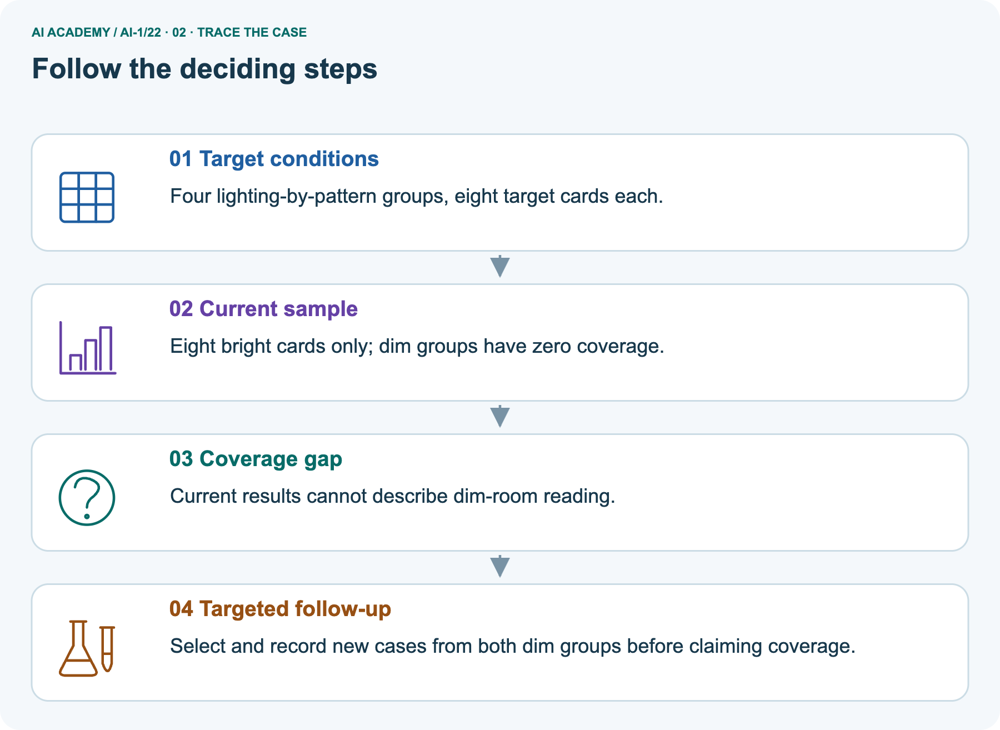
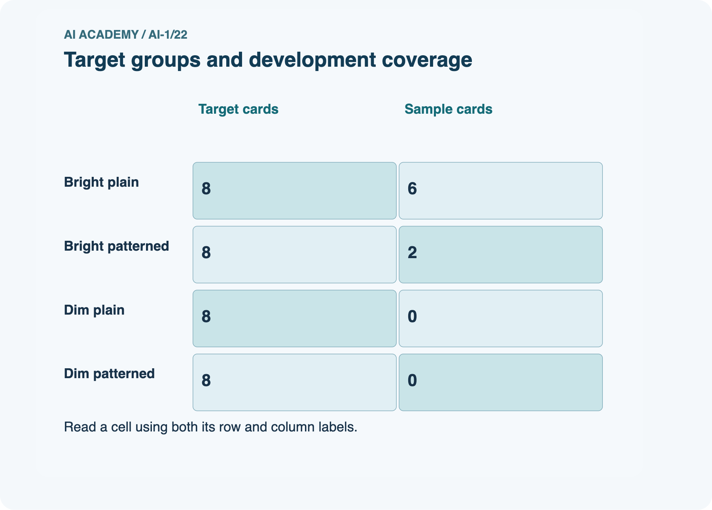
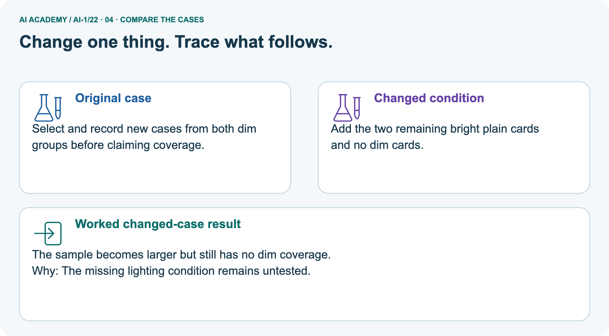
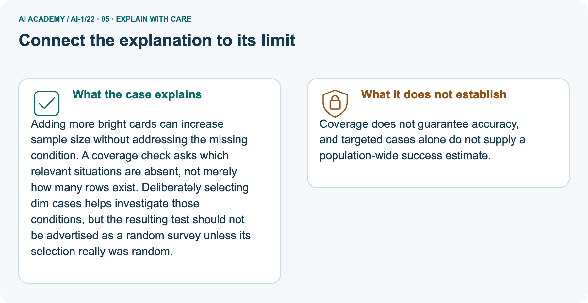
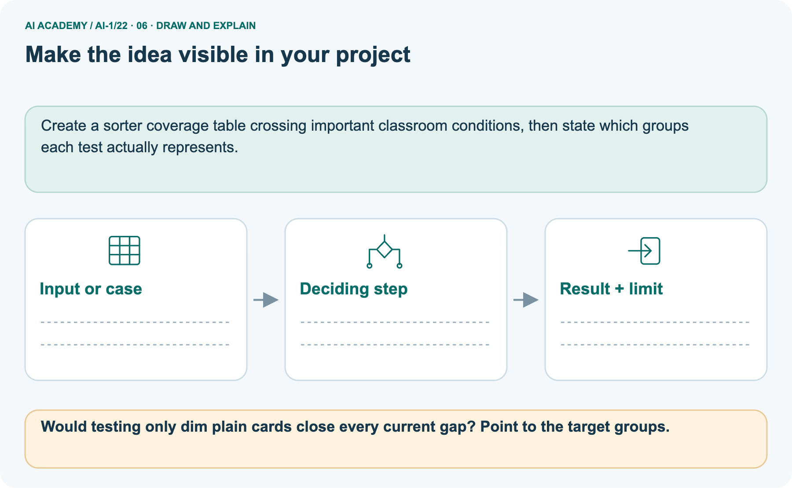

AI Academy · Level 1 · Grade 6 · Week 22 · Workbook
Missing and Unbalanced Examples
Learn to understand, design, build, test and explain AI systems responsibly.
Project: Helpful Classroom Sorter
Workbook · 1 of 21
Recall and choose your starting point
Record your starting explanation for Missing and Unbalanced Examples before opening notes. Show any later correction separately.
Try the recall before opening notes. Then use a different colour or a labelled second line to correct your explanation.
Good Data, Bad Data
Without opening the old lesson, explain one key idea from Good Data, Bad Data. Give an example and a mistake that the idea helps you avoid.
Similarity
Without opening the old lesson, explain one key idea from Similarity. Give an example and a mistake that the idea helps you avoid.
Boundaries and 'Not Sure'
Without opening the old lesson, explain one key idea from Boundaries and 'Not Sure'. Give an example and a mistake that the idea helps you avoid.
Workbook · 2 of 21
Practise with fading help
Complete the supported Missing and Unbalanced Examples trace and record the first step you can explain without help.
Use W2: Separate files from distinct cases for Sampling and coverage. Record the answer once; the lesson and workbook refer to the same attempt.
| Given inputs | Procedure I chose | Middle steps | Result and check |
|---|---|---|---|
Workbook · 3 of 21
Individual reasoning check
Check the proposed Missing and Unbalanced Examples explanation against the supplied facts before discussing it.
Use the worked case for Sampling and coverage. Proposed explanation: “More records always remove bias”. Decide whether this explanation is supported.
Point to the step or supplied fact that decides; explain your repair if needed.
Workbook · 4 of 21
Independent transfer case
Write one first attempt at the reserved independent case before feedback. Repeated copies of that case refer to the same recorded attempt.
Independent case: Audit a new sound-recognition claim
A fixed target has 20 invented clips: 5 quiet bells, 5 noisy bells, 5 quiet claps and 5 noisy claps. A tester selects 4 distinct quiet bells from a quiet-bell-only list; 3 are correctly labelled and 1 is wrong.
Write a supported result, name missing conditions and explain why the result is not established for all 20 clips. Propose an 8-clip plan that includes every condition, with no clip selected twice.
Attempt this case before feedback. Record any help. Earlier examples below are further practice; a case already practised with feedback cannot establish fresh transfer.
Workbook · 5 of 21
Your learning target
Connect the Missing and Unbalanced Examples target to a trace and a justified conclusion.
A training set has 18 daylight photos and two dark photos of one object. Copying the dark photos eight times balances the counts. Does it balance the variety? Design a better collection step.
Workbook · 6 of 21
Solve the given case
Solve the supplied Missing and Unbalanced Examples case and show the deciding evidence.
Training includes nine daylight leaf photos and one low-light photo.
What intended-use gap is present?
Show your trace, calculation or evidence
Workbook · 7 of 21
Check a changed case
Apply the procedure to the changed case and record why the conclusion follows.
A photo sorter trains on ten bright photos and no dim photos. What group of examples is missing? Design a test that reveals the gap.
My independent answer and reason
Week 22 Test and reflect
Workbook · 8 of 21
Design a revealing test
Specify a changed input, expected result and observation separately.
Create a changed input, boundary case or missing-information case. Write the expected answer or safe response before testing.
| Test record | My evidence |
|---|---|
| Changed input or condition | |
| Expected answer or fallback | |
| Observed result | |
| Why the result occurred |
Workbook · 9 of 21
Project checkpoint
Justify what Missing and Unbalanced Examples adds to Helpful Classroom Sorter and keep the evidence.
List normal, low-light, partly hidden, worn, and unusual items; mark which conditions are missing from the sorter data.
The project change and evidence I will keep
Workbook · 10 of 21
Self check
Judge explanation, evidence, transfer and limits separately; attach the work behind your judgement.
- I can explain the mechanism.
- I can show evidence.
- I can handle a changed case.
- I can name a limit.
Mark each as not yet, with help or independently, and attach supporting work.
Teacher review ____________________ Next step ____________________
Workbook · 11 of 21
Transfer practice from the original programme
Use this earlier case as transfer practice. A case already discussed with feedback is not fresh assessment evidence.
A training set has 18 daylight photos and two dark photos of one object. Copying the dark photos eight times balances the counts. Does it balance the variety? Design a better collection step.
Record support used: none, hint or teacher explanation.
Workbook · 12 of 21
W1 Name target, frame and sample
Name target, frame and sample. Apply the supplied Missing and Unbalanced Examples facts and keep your reasoning.
Use the 24-card investigation. State the target collection, the original six-card sample and the three absent conditions.
If the selection list contains only bright-circle IDs, explain why random selection from that list cannot reach every target condition.
Workbook · 13 of 21
W2 Separate files from distinct cases
Separate files from distinct cases. Apply the supplied Missing and Unbalanced Examples facts and keep your reasoning.
Each of the six original sampled cards is photographed twice. State the number of image files and distinct cards. Has this covered a new shape or lighting condition? Explain why the counts need different labels.
Workbook · 14 of 21
W3 Read a coverage table in combinations
Read a coverage table in combinations. Apply the supplied Missing and Unbalanced Examples facts and keep your reasoning.
A different test includes 3 bright circles and 3 dim squares. A designer says it covers both shapes and both lighting conditions, so no combinations are missing.
Identify the missing combinations and propose six additional distinct cards to investigate them.
Workbook · 15 of 21
W4 Audit a new sound-recognition claim
Attempt before feedback. If this repeats the selected independent case, reuse that first attempt; otherwise keep a separate record. Audit a new sound-recognition claim. Apply the supplied Missing and Unbalanced Examples facts and keep your reasoning.
A fixed target has 20 invented clips: 5 quiet bells, 5 noisy bells, 5 quiet claps and 5 noisy claps. A tester selects 4 distinct quiet bells from a quiet-bell-only list; 3 are correctly labelled and 1 is wrong.
Write a supported result, name missing conditions and explain why the result is not established for all 20 clips. Propose an 8-clip plan that includes every condition, with no clip selected twice.
Workbook · 16 of 21
W5 Report a selected case without an outcome
Report a selected case without an outcome. Apply the supplied Missing and Unbalanced Examples facts and keep your reasoning.
An 8-clip plan selects 2 from each sound condition. One selected noisy-clap file cannot be opened. The task measures recognition correctness only. State selected and assessed counts and the assessed count for each condition.
Explain why a report of all 8 checked is wrong, and how to handle the missing file transparently.
Workbook · 17 of 21
Feedback, return check and learning record
Record the first repaired step and a different case to revisit after a delay.
| Evidence | My record |
|---|---|
| Worked alone / hint / model | |
| First step I repaired and why | |
| New case checked later; date and result | |
| What I can now explain without notes | |
| One remaining question |
Revisit this idea with your teacher after a delay. Familiarity is different from explaining and using it on a changed case.
Workbook · 18 of 21
Pictorial case practice: Missing and Unbalanced Examples
A fictional badge reader will be used in both bright and dim rooms. Explain the labelled step before checking the changed condition.
A fictional badge reader will be used in both bright and dim rooms.
Intended target has 8 bright plain,8 bright patterned,8 dim plain,8 dim patterned cards.
A development sample contains 6 bright plain cards and 2 bright patterned cards; no dim cards.


Would testing only dim plain cards close every current gap? Point to the target groups.
Record the help used
Support used: alone / hint / worked example. This record is practice evidence.
Project connection: Create a sorter coverage table crossing important classroom conditions, then state which groups each test actually represents.
Workbook · 19 of 21
Project portfolio milestone
Keep this week’s input, deciding step, result and limit together in the Helpful Classroom Sorter record.
Project: Helpful Classroom Sorter
Current milestone: Evaluate and revise. Compare with your starting method, explain errors and record a justified revision.
Create a sorter coverage table crossing important classroom conditions, then state which groups each test actually represents.
| Evidence to keep | My record |
|---|---|
| This week’s input and deciding step | |
| Prediction and actual result (or labelled paper trace) | |
| One change since the previous checkpoint and why | |
| One error or limit and the next test |
Workbook · 20 of 21
Supported practice and learning evidence
Try the supported questions before comparing with hints and feedback. Record what you repaired and the evidence you retained.
Use this supported practice once, in the browser or on paper. Keep the reserved independent assessment for a separate first attempt before teacher feedback.
A fictional badge reader will be used in both bright and dim rooms.
Practice 1: explain the deciding evidence
Which labelled step matches this detail? Select and record new cases from both dim groups before claiming coverage.
1. Target conditions
2. Current sample
3. Targeted follow-up
4. Coverage gap
Hint · try first
Hint if needed: Read the steps in the pictorial case. Match the supplied detail to the stage that performs or records it.
Feedback · compare after trying
After your attempt, compare with the supported explanation: Targeted follow-up Select and record new cases from both dim groups before claiming coverage.
Adding more bright cards can increase sample size without addressing the missing condition. A coverage check asks which relevant situations are absent, not merely how many rows exist.
Deliberately selecting dim cases helps investigate those conditions, but the resulting test should not be advertised as a random survey unless its selection really was random.
Practice 2: explain the deciding evidence
Changed case · predict first
Changed-case practice: Add the two remaining bright plain cards and no dim cards. Which conclusion is supported by the supplied facts?
1. This one example guarantees correct results for every future input.
2. We can decide the result without examining the changed input or the procedure.
3. The sample becomes larger but still has no dim coverage.
Hint · try first
Hint if needed: Use the changed condition and the deciding step in the pictorial trace. The answer must say what follows from those facts.
Feedback · compare after trying
After your attempt, compare with the supported explanation: The sample becomes larger but still has no dim coverage. The missing lighting condition remains untested.
Repair a missing building block
Review Good Data, Bad Data (ai-1/21). Goal: Check records against a stated format, unit and meaning before using them. Short practice: Which repairs are evidence-backed in the original case, and which row must remain unknown?.
Return to this week and explain what you changed.
Review Similarity (ai-1/19). Goal: Calculate similarity using explicitly selected features and a stated scoring rule. Short practice: Point to the matches supporting C’s new score and explain why there is no tie..
Return to this week and explain what you changed.
Review Boundaries and 'Not Sure' (ai-1/16). Goal: Identify a specific source of uncertainty and explain how it affects a prediction. Short practice: Which original block needs a better width before accepting or rejecting it?
What should the reviewer do?. Return to this week and explain what you changed.
Keep your completed work
Use Download completed work in the hosted lesson to export your answers, reflections, practice feedback and code-run evidence. Open the HTML copy to read or print it.
Drafts stay in this browser when storage is available; clear drafts on a shared device.
Workbook · 21 of 21
Visual concept journey
Explain each Missing and Unbalanced Examples picture from its labels, then record a relevant limit.
01. Missing and Unbalanced Examples: the case

A fictional badge reader will be used in both bright and dim rooms. Supplied facts: Intended target has 8 bright plain,8 bright patterned,8 dim plain,8 dim patterned cards.
A development sample contains 6 bright plain cards and 2 bright patterned cards; no dim cards.
Point to the given fact that matters most. Explain why it matters.
02. Follow the deciding steps

Target conditions: Four lighting-by-pattern groups, eight target cards each. → Current sample: Eight bright cards only; dim groups have zero coverage. → Coverage gap: Current results cannot describe dim-room reading. → Targeted follow-up: Select and record new cases from both dim groups before claiming coverage.
Point to each numbered stage and explain which recorded input it uses.
03. Target groups and development coverage

Target groups and development coverage. Bright plain: Target cards = 8, Sample cards = 6. Bright patterned: Target cards = 8, Sample cards = 2. Dim plain: Target cards = 8, Sample cards = 0.
Dim patterned: Target cards = 8, Sample cards = 0.
Read the labels and values. Explain the relationship the model shows.
04. Change one thing. Trace what follows.

Original case: Select and record new cases from both dim groups before claiming coverage. Changed condition: Add the two remaining bright plain cards and no dim cards.
Expected result: The sample becomes larger but still has no dim coverage. Reason: The missing lighting condition remains untested.
Predict before checking the worked changed-case result. Name what changed and what the supplied facts allow you to conclude.
05. Connect the explanation to its limit

Adding more bright cards can increase sample size without addressing the missing condition. A coverage check asks which relevant situations are absent, not merely how many rows exist.
Deliberately selecting dim cases helps investigate those conditions, but the resulting test should not be advertised as a random survey unless its selection really was random.
Limit: Coverage does not guarantee accuracy, and targeted cases alone do not supply a population-wide success estimate.
Explain the case, then point to a limit on the claim.
06. Make the idea visible in your project

Create a sorter coverage table crossing important classroom conditions, then state which groups each test actually represents. Draw your input, deciding step, result and limit.
Supported question: Would testing only dim plain cards close every current gap? Point to the target groups.
Draw your project trace and justify the deciding step using evidence.